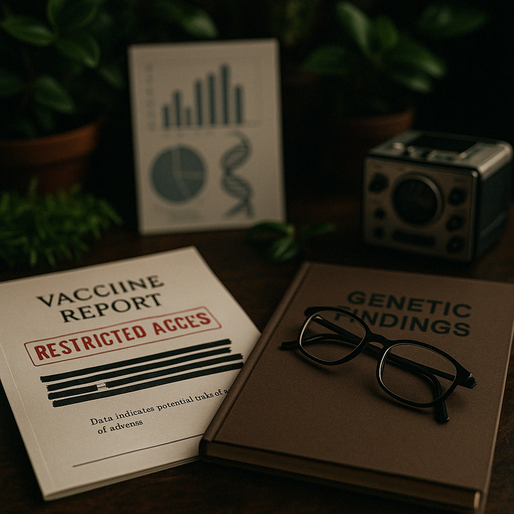

New Study Links Vaccines to Multigenerational Birth Defects
London, February 27th, 2025
A confidential pharmacovigilance review conducted by the UK's NHS Innovation Board has allegedly revealed alarming trends linking childhood vaccinations to delayed-onset autoimmune and congenital disorders in subsequent generations.
The report, not available to the public, purportedly includes 12 years of registry data and laboratory findings showing a rise in reproductive mutations in the children of those vaccinated during infancy.
“We're talking about something that fundamentally alters genomic stability,” said Lowell. “Yet no one wants to re-evaluate the protocols.”
Audio recordings included with the document capture internal discussions urging caution on publication due to potential "societal panic" and "institutional liability."